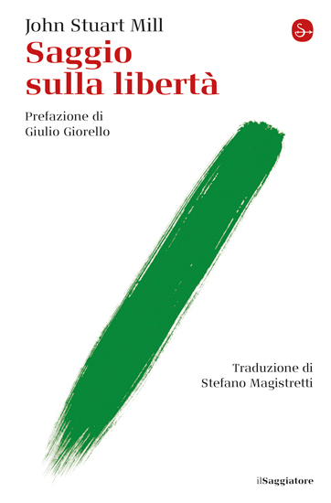

Sulla stupidità
Un invito a diffidare delle certezze, cominciando dalle proprie.
Libro e riferimentiIL CIRCOLO DEL DR DIVAGO
Il Circolo nasce dalle conversazioni di Sergio Caldarella: raccoglie video e libri per ritrovare le fonti e leggere il presente attraverso le idee del passato. Uno spazio aperto alla curiosità, al confronto e alla libertà di giudizio.
Un invito a diffidare delle certezze, cominciando dalle proprie.
Libro e riferimenti
Un percorso fra vita quotidiana, cultura e pensiero critico.
Libro e riferimenti
Una biblioteca personale, una geografia della memoria.
Libro e riferimenti
Libertà di pensiero, autonomia e responsabilità nel confronto.
Libro e riferimenti
Che cosa chiediamo all’educazione e alla cultura?
Libro e riferimenti
Scrittura, esperienza e libertà dello sguardo.
Libro e riferimentiLibri citati nelle conversazioni di Dr Divago. Le copertine mostrano edizioni di riferimento dei rispettivi editori.
L’archivio dei video, per seguire un tema o incontrare una domanda.
855 OPERE IN BIBLIOTECAAutori, opere e fonti per continuare la lettura e tornare ai video che li citano.
PROGETTO EDITORIALEL’idea di una casa editrice, da costruire attraverso la cura dei testi e il dialogo con i lettori.